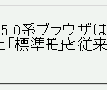

letter-spacingプロパティで文字間隔を調整した要素内で、「ー」（長音記号）とその直後の文字とが重なって表示される。
<p style="letter-spacing:1px;">Mozilla……「標準モード」……があります。</p>
Mozilla 5.0系ブラウザは、DOCTYPEの記述によってCSSのレンダリングが変わります。W3C勧告に準拠した「標準モード」と従来のIEのレンダリングを継承した「互換モード」の2種類のモードがあります。
WinIE6.0での表示（標準モード）
N6.2.3での表示（標準モード）
「ー」と直後の文字が重なる現象については、Mozバグ016も参照してください。
N6.2.3では標準・互換モードともに不具合の発生が確認されました。Moz1.0では標準・互換モードともに不具合の発生が確認されませんでした。